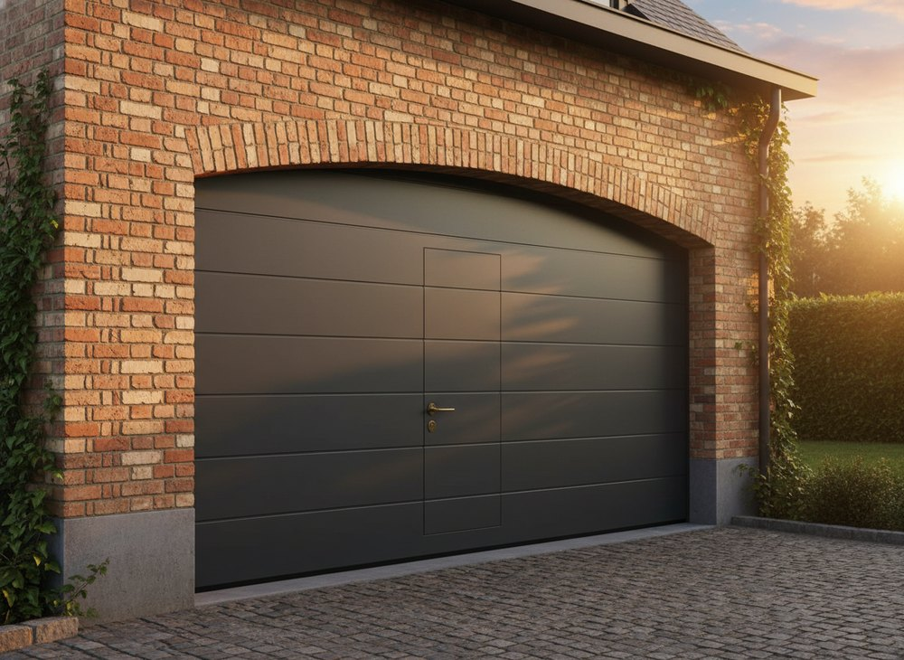

De meest populaire keuze: optimaal ruimtegebruik, uitstekende isolatie en eindeloos personaliseerbaar. De poort opent verticaal langs het plafond, zodat de zijmuren vrij blijven.
40 mm isolatie
Sandwichpanelen met PU-schuim
Tot 5,5 m breed
max. 5500 × 3000 mm
± 400 kleuren
RAL + designs naar keuze
Gemotoriseerd
Geruisloze werking
Inbraakwerend
Obstakeldetectie + valstop
Loopdeur mogelijk
Lage drempel 2,5 cm
Kies type, design, kleur en maten, en bekijk meteen je richtprijs. Vrijblijvend en zonder verplichtingen.